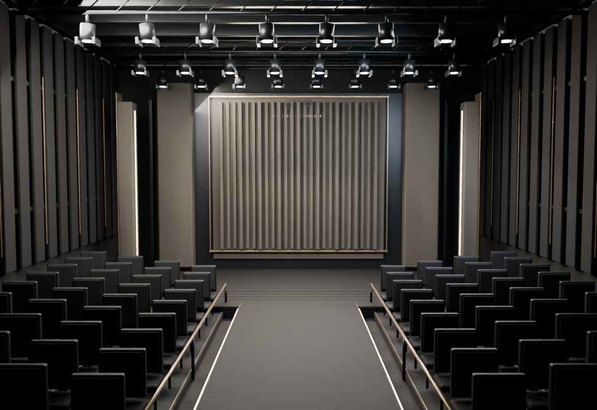
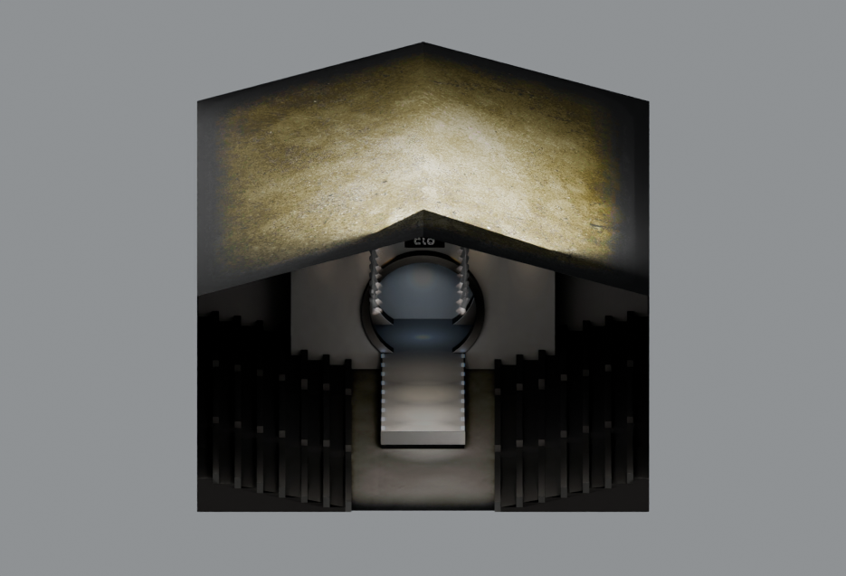

Stage 01 — Runway Chamber
An original Blender environment informed by the real Stage_01.zprj file from CLO. Review the empty set first, then its avatar scale. The lighting, modular architecture and camera angles remain editable in Blender. This scene has not been installed in the garment editor.


Research reference → original design
CLO uses standalone Scene & Props stage files and retains the main 3D garment workflow. The reference has a complete enclosure, audience geometry, overhead stage equipment and substantial runway depth. This Blender scene uses those functional principles, built as new authored geometry, materials, lighting and camera presets.
This is one studio scene. The next step is visual approval; we can refine its floor, set design, lighting or camera composition in Blender before wiring it into the EXO editor.